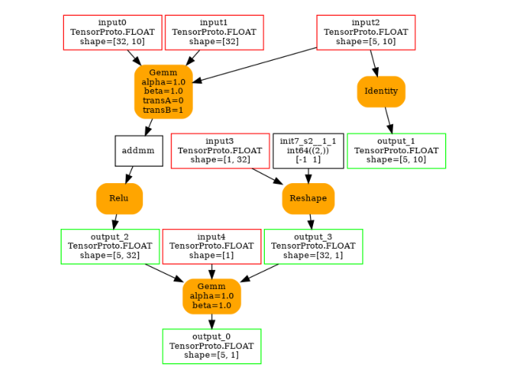
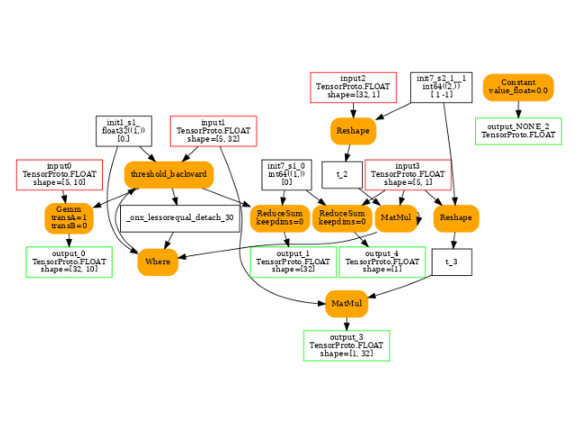
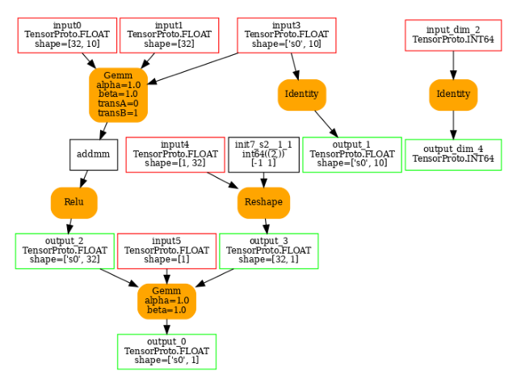
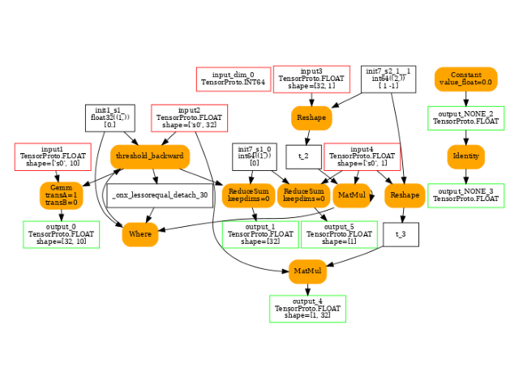

Note
Go to the end to download the full example code
101: A custom backend for torch¶
This example leverages the examples introduced on this page
Custom Backends.
It uses backend experimental_experiment.torch_dynamo.onnx_custom_backend()
based on onnxruntime and running on CPU or CUDA.
It could easily replaced by
experimental_experiment.torch_dynamo.onnx_debug_backend().
This one based on the reference implemented from onnx
can show the intermediate results if needed. It is very slow.
A model¶
import copy
from onnx_array_api.plotting.text_plot import onnx_simple_text_plot
from onnx_array_api.plotting.graphviz_helper import plot_dot
import torch
from torch._dynamo.backends.common import aot_autograd
# from torch._functorch._aot_autograd.utils import make_boxed_func
from experimental_experiment.torch_dynamo import (
onnx_custom_backend,
get_decomposition_table,
)
class MLP(torch.nn.Module):
def __init__(self):
super().__init__()
self.layers = torch.nn.Sequential(
torch.nn.Linear(10, 32),
torch.nn.ReLU(),
torch.nn.Linear(32, 1),
)
def forward(self, x):
return self.layers(x)
x = torch.randn(3, 10, dtype=torch.float32)
mlp = MLP()
print(mlp(x))
tensor([[-0.1377],
[ 0.0022],
[ 0.1547]], grad_fn=<AddmmBackward0>)
A custom backend¶
This backend leverages onnxruntime.
It is available through function
experimental_experiment.torch_dynamo.onnx_custom_backend()
and implemented by class OrtBackend.
compiled_model = torch.compile(
copy.deepcopy(mlp),
backend=lambda *args, **kwargs: onnx_custom_backend(
*args, target_opset=18, **kwargs
),
dynamic=False,
fullgraph=True,
)
print(compiled_model(x))
tensor([[-0.1377],
[ 0.0022],
[ 0.1547]])
Training¶
It can be used for training as well. The compilation may not
be working if the model is using function the converter does not know.
Maybe, there exist a way to decompose this new function into
existing functions. A recommended list is returned by
with function get_decomposition_table.
An existing list can be filtered out from some inefficient decompositions
with function filter_decomposition_table.
aot_compiler = aot_autograd(
fw_compiler=lambda *args, **kwargs: onnx_custom_backend(
*args, target_opset=18, **kwargs
),
decompositions=get_decomposition_table(),
)
compiled_model = torch.compile(
copy.deepcopy(mlp),
backend=aot_compiler,
fullgraph=True,
dynamic=False,
)
print(compiled_model(x))
tensor([[-0.1377],
[ 0.0022],
[ 0.1547]], grad_fn=<CompiledFunctionBackward>)
Let’s see an iteration loop.
from sklearn.datasets import load_diabetes
class DiabetesDataset(torch.utils.data.Dataset):
def __init__(self, X, y):
self.X = torch.from_numpy(X / 10).to(torch.float32)
self.y = torch.from_numpy(y).to(torch.float32).reshape((-1, 1))
def __len__(self):
return len(self.X)
def __getitem__(self, i):
return self.X[i], self.y[i]
def trained_model(max_iter=5, dynamic=False, storage=None):
aot_compiler = aot_autograd(
fw_compiler=lambda *args, **kwargs: onnx_custom_backend(
*args, target_opset=18, storage=storage, **kwargs
),
decompositions=get_decomposition_table(),
)
compiled_model = torch.compile(
MLP(),
backend=aot_compiler,
fullgraph=True,
dynamic=dynamic,
)
trainloader = torch.utils.data.DataLoader(
DiabetesDataset(*load_diabetes(return_X_y=True)),
batch_size=5,
shuffle=True,
num_workers=0,
)
loss_function = torch.nn.L1Loss()
optimizer = torch.optim.Adam(compiled_model.parameters(), lr=1e-1)
for epoch in range(0, max_iter):
current_loss = 0.0
for i, data in enumerate(trainloader, 0):
X, y = data
optimizer.zero_grad()
p = compiled_model(X)
loss = loss_function(p, y)
loss.backward()
optimizer.step()
current_loss += loss.item()
print(f"Loss after epoch {epoch+1}: {current_loss}")
print("Training process has finished.")
return compiled_model
trained_model(3)
/home/xadupre/.local/lib/python3.10/site-packages/torch/_functorch/_aot_autograd/utils.py:117: UserWarning: Your compiler for AOTAutograd is returning a function that doesn't take boxed arguments. Please wrap it with functorch.compile.make_boxed_func or handle the boxed arguments yourself. See https://github.com/pytorch/pytorch/pull/83137#issuecomment-1211320670 for rationale.
warnings.warn(
/home/xadupre/.local/lib/python3.10/site-packages/torch/_functorch/_aot_autograd/utils.py:117: UserWarning: Your compiler for AOTAutograd is returning a function that doesn't take boxed arguments. Please wrap it with functorch.compile.make_boxed_func or handle the boxed arguments yourself. See https://github.com/pytorch/pytorch/pull/83137#issuecomment-1211320670 for rationale.
warnings.warn(
Loss after epoch 1: 7422.153186798096
Loss after epoch 2: 5531.330051422119
Loss after epoch 3: 5222.763031005859
Training process has finished.
OptimizedModule(
(_orig_mod): MLP(
(layers): Sequential(
(0): Linear(in_features=10, out_features=32, bias=True)
(1): ReLU()
(2): Linear(in_features=32, out_features=1, bias=True)
)
)
)
What about the ONNX model?¶
The backend converts the model into ONNX then runs it with onnxruntime. Let’s see what it looks like.
/home/xadupre/.local/lib/python3.10/site-packages/torch/_functorch/_aot_autograd/utils.py:117: UserWarning: Your compiler for AOTAutograd is returning a function that doesn't take boxed arguments. Please wrap it with functorch.compile.make_boxed_func or handle the boxed arguments yourself. See https://github.com/pytorch/pytorch/pull/83137#issuecomment-1211320670 for rationale.
warnings.warn(
/home/xadupre/.local/lib/python3.10/site-packages/torch/_functorch/_aot_autograd/utils.py:117: UserWarning: Your compiler for AOTAutograd is returning a function that doesn't take boxed arguments. Please wrap it with functorch.compile.make_boxed_func or handle the boxed arguments yourself. See https://github.com/pytorch/pytorch/pull/83137#issuecomment-1211320670 for rationale.
warnings.warn(
Loss after epoch 1: 7220.020864486694
Loss after epoch 2: 5544.643701553345
Loss after epoch 3: 5222.171184539795
Training process has finished.
4 were created.
-- model 0 running on ['CPUExecutionProvider']
opset: domain='' version=18
input: name='input0' type=dtype('float32') shape=[32, 10]
input: name='input1' type=dtype('float32') shape=[32]
input: name='input2' type=dtype('float32') shape=[1, 32]
input: name='input3' type=dtype('float32') shape=[1]
input: name='input4' type=dtype('float32') shape=[5, 10]
Gemm(input4, input0, input1, transA=0, transB=1, alpha=1.00, beta=1.00) -> addmm
Relu(addmm) -> output_2
Gemm(output_2, input2, input3, transA=0, transB=1, alpha=1.00, beta=1.00) -> output_0
Transpose(input2, perm=[1,0]) -> output_3
Identity(input4) -> output_1
output: name='output_0' type=dtype('float32') shape=[5, 1]
output: name='output_1' type=dtype('float32') shape=[5, 10]
output: name='output_2' type=dtype('float32') shape=[5, 32]
output: name='output_3' type=dtype('float32') shape=[32, 1]
-- model 1 running on ['CPUExecutionProvider']
opset: domain='' version=18
input: name='input0' type=dtype('float32') shape=[5, 10]
input: name='input1' type=dtype('float32') shape=[5, 32]
input: name='input2' type=dtype('float32') shape=[32, 1]
input: name='input3' type=dtype('float32') shape=[5, 1]
init: name='init7_s1_0' type=dtype('int64') shape=(1,) -- array([0])
init: name='init1_s1_' type=dtype('float32') shape=(1,) -- array([0.], dtype=float32)
init: name='init1_s1_2' type=dtype('float32') shape=(1,) -- array([0.], dtype=float32)
Constant(value_float=0.0) -> output_NONE_4
Gemm(input3, input2, transA=0, transB=1) -> mm
Gemm(input3, input1, transA=1, transB=0) -> output_2
ReduceSum(input3, init7_s1_0, keepdims=0) -> output_3
LessOrEqual(input1, init1_s1_) -> _onx_lessorequal0
Where(_onx_lessorequal0, init1_s1_2, mm) -> threshold_backward
Gemm(threshold_backward, input0, transA=1, transB=0) -> output_0
ReduceSum(threshold_backward, init7_s1_0, keepdims=0) -> output_1
output: name='output_0' type=dtype('float32') shape=[32, 10]
output: name='output_1' type=dtype('float32') shape=[32]
output: name='output_2' type=dtype('float32') shape=[1, 32]
output: name='output_3' type=dtype('float32') shape=[1]
output: name='output_NONE_4' type=dtype('float32') shape=None
The forward graph.
<Axes: >
The backward graph.
<Axes: >
What about dynamic shapes?¶
Any input or output having _dim_ in its name is a dynamic dimension. Any output having _NONE_ in its name is replace by None. It is needed by pytorch.
/home/xadupre/.local/lib/python3.10/site-packages/torch/_functorch/_aot_autograd/utils.py:117: UserWarning: Your compiler for AOTAutograd is returning a function that doesn't take boxed arguments. Please wrap it with functorch.compile.make_boxed_func or handle the boxed arguments yourself. See https://github.com/pytorch/pytorch/pull/83137#issuecomment-1211320670 for rationale.
warnings.warn(
/home/xadupre/.local/lib/python3.10/site-packages/torch/_functorch/_aot_autograd/utils.py:117: UserWarning: Your compiler for AOTAutograd is returning a function that doesn't take boxed arguments. Please wrap it with functorch.compile.make_boxed_func or handle the boxed arguments yourself. See https://github.com/pytorch/pytorch/pull/83137#issuecomment-1211320670 for rationale.
warnings.warn(
Loss after epoch 1: 7449.048362731934
Loss after epoch 2: 5446.76446723938
Loss after epoch 3: 5214.085321426392
Training process has finished.
4 were created.
-- model 0 running on ['CPUExecutionProvider']
opset: domain='' version=18
input: name='input0' type=dtype('float32') shape=[32, 10]
input: name='input1' type=dtype('float32') shape=[32]
input: name='input2' type=dtype('float32') shape=[1, 32]
input: name='input3' type=dtype('float32') shape=[1]
input: name='input_dim_4' type=dtype('int64') shape=[1]
input: name='input5' type=dtype('float32') shape=['primals_5', 10]
Gemm(input5, input0, input1, transA=0, transB=1, alpha=1.00, beta=1.00) -> addmm
Relu(addmm) -> output_2
Gemm(output_2, input2, input3, transA=0, transB=1, alpha=1.00, beta=1.00) -> output_0
Transpose(input2, perm=[1,0]) -> output_3
Identity(input5) -> output_1
Identity(input_dim_4) -> output_dim_4
output: name='output_0' type=dtype('float32') shape=[5, 1]
output: name='output_1' type=dtype('float32') shape=['primals_5', 10]
output: name='output_2' type=dtype('float32') shape=[5, 32]
output: name='output_3' type=dtype('float32') shape=[32, 1]
output: name='output_dim_4' type=dtype('int64') shape=[1]
-- model 1 running on ['CPUExecutionProvider']
opset: domain='' version=18
input: name='input_dim_0' type=dtype('int64') shape=[1]
input: name='input1' type=dtype('float32') shape=[5, 10]
input: name='input2' type=dtype('float32') shape=[5, 32]
input: name='input3' type=dtype('float32') shape=[32, 1]
input: name='input4' type=dtype('float32') shape=[5, 1]
init: name='init7_s1_0' type=dtype('int64') shape=(1,) -- array([0])
init: name='init1_s1_' type=dtype('float32') shape=(1,) -- array([0.], dtype=float32)
init: name='init1_s1_2' type=dtype('float32') shape=(1,) -- array([0.], dtype=float32)
Constant(value_float=0.0) -> output_NONE_4
Identity(output_NONE_4) -> output_NONE_5
Gemm(input4, input3, transA=0, transB=1) -> mm
Gemm(input4, input2, transA=1, transB=0) -> output_2
ReduceSum(input4, init7_s1_0, keepdims=0) -> output_3
LessOrEqual(input2, init1_s1_) -> _onx_lessorequal0
Where(_onx_lessorequal0, init1_s1_2, mm) -> threshold_backward
Gemm(threshold_backward, input1, transA=1, transB=0) -> output_0
ReduceSum(threshold_backward, init7_s1_0, keepdims=0) -> output_1
output: name='output_0' type=dtype('float32') shape=[32, 10]
output: name='output_1' type=dtype('float32') shape=[32]
output: name='output_2' type=dtype('float32') shape=[1, 32]
output: name='output_3' type=dtype('float32') shape=[1]
output: name='output_NONE_4' type=dtype('float32') shape=None
output: name='output_NONE_5' type=dtype('float32') shape=None
-- model 2 running on ['CPUExecutionProvider']
opset: domain='' version=18
input: name='input0' type=dtype('float32') shape=[32, 10]
input: name='input1' type=dtype('float32') shape=[32]
input: name='input2' type=dtype('float32') shape=[1, 32]
input: name='input3' type=dtype('float32') shape=[1]
input: name='input_dim_4' type=dtype('int64') shape=[1]
input: name='input5' type=dtype('float32') shape=['primals_5', 10]
Gemm(input5, input0, input1, transA=0, transB=1, alpha=1.00, beta=1.00) -> addmm
Relu(addmm) -> output_2
Gemm(output_2, input2, input3, transA=0, transB=1, alpha=1.00, beta=1.00) -> output_0
Transpose(input2, perm=[1,0]) -> output_3
Identity(input5) -> output_1
Identity(input_dim_4) -> output_dim_4
output: name='output_0' type=dtype('float32') shape=[2, 1]
output: name='output_1' type=dtype('float32') shape=['primals_5', 10]
output: name='output_2' type=dtype('float32') shape=[2, 32]
output: name='output_3' type=dtype('float32') shape=[32, 1]
output: name='output_dim_4' type=dtype('int64') shape=[1]
-- model 3 running on ['CPUExecutionProvider']
opset: domain='' version=18
input: name='input_dim_0' type=dtype('int64') shape=[1]
input: name='input1' type=dtype('float32') shape=[2, 10]
input: name='input2' type=dtype('float32') shape=[2, 32]
input: name='input3' type=dtype('float32') shape=[32, 1]
input: name='input4' type=dtype('float32') shape=[2, 1]
init: name='init7_s1_0' type=dtype('int64') shape=(1,) -- array([0])
init: name='init1_s1_' type=dtype('float32') shape=(1,) -- array([0.], dtype=float32)
init: name='init1_s1_2' type=dtype('float32') shape=(1,) -- array([0.], dtype=float32)
Constant(value_float=0.0) -> output_NONE_4
Identity(output_NONE_4) -> output_NONE_5
Gemm(input4, input3, transA=0, transB=1) -> mm
Gemm(input4, input2, transA=1, transB=0) -> output_2
ReduceSum(input4, init7_s1_0, keepdims=0) -> output_3
LessOrEqual(input2, init1_s1_) -> _onx_lessorequal0
Where(_onx_lessorequal0, init1_s1_2, mm) -> threshold_backward
Gemm(threshold_backward, input1, transA=1, transB=0) -> output_0
ReduceSum(threshold_backward, init7_s1_0, keepdims=0) -> output_1
output: name='output_0' type=dtype('float32') shape=[32, 10]
output: name='output_1' type=dtype('float32') shape=[32]
output: name='output_2' type=dtype('float32') shape=[1, 32]
output: name='output_3' type=dtype('float32') shape=[1]
output: name='output_NONE_4' type=dtype('float32') shape=None
output: name='output_NONE_5' type=dtype('float32') shape=None
The forward graph.
<Axes: >
The backward graph.
<Axes: >
Pattern Optimizations¶
By default, once exported into onnx, a model is optimized by looking for patterns. Each of them locally replaces a couple of nodes to optimize the computation (see Onnx (default) Patterns and # Ort Patterns).
Total running time of the script: (0 minutes 2.192 seconds)